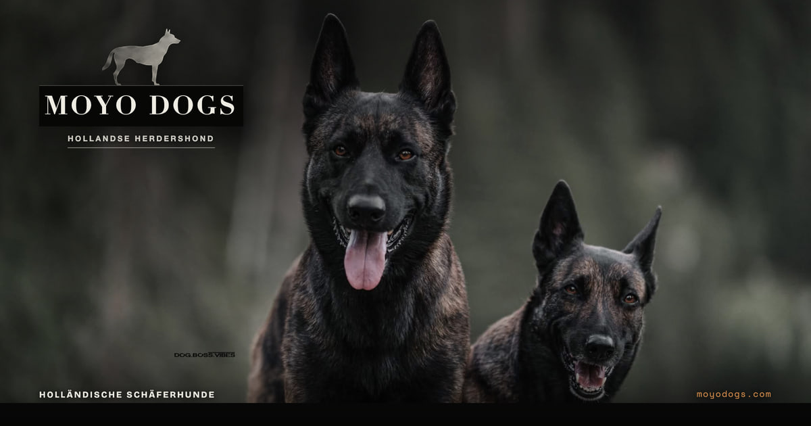

Finale Variante für den Link-Preview, 1200 × 630 px. Das Foto ist unverändert – nur der Bildausschnitt wurde beschnitten und leicht nach oben verschoben, damit beide Hunde gut ins Format passen. Ausdruck und Gestik sind nicht bearbeitet. Logo und Schrift in Creme statt Gold, Fusszeile ohne Kanton Bern. Das Original-Wasserzeichen bleibt im Bild.

Die Datei liegt als public/media/social-card.jpg in der Website und ist in src/data/site.json als socialImage hinterlegt. card.html ist die Render-Vorlage und verweist auf das Originalfoto IMG_6577.JPG; assets/dog-cream.png ist die freigestellte Creme-Silhouette.